Time Varying Parameters and Stochastic Volatility in bvartools
Franz X. Mohr
Source:vignettes/tvp-sv-var.Rmd
tvp-sv-var.RmdIntroduction
A standard VAR makes two constancy assumptions that a long sample rarely supports. The coefficients are the same in every period, so the dynamics of the 1970s are estimated jointly with those of the 2000s and the result describes neither. And the error covariance matrix is the same in every period, so a sample that contains both a turbulent decade and a quiet one attributes the average of the two to each – which overstates the uncertainty of the quiet period and understates the uncertainty of the turbulent one.
Dropping the first assumption gives a time varying parameter (TVP)
model, dropping the second a stochastic volatility (SV) model.
bvartools treats them as two independent switches,
tvp and error, so a model can have either or
both. This vignette estimates a model with both, and adds Bayesian
variable selection on top of it, since a model with one coefficient per
regressor and period is exactly the kind of model that benefits from
being told which regressors it does not need.
The estimated model is
where the coefficients follow a random walk
and the error covariance matrix is decomposed as
with
lower triangular with ones on its diagonal. The log-volatilities are
random walks, and in a TVP model the free elements of
are random walks as well, so the correlations between the errors move
too. In a model with constant coefficients and
error = "sv+covar" only the volatilities move and
is estimated once.
The state equations are what a TVP-SV model estimates in place of the constant parameters of a standard VAR, and their variances – for the coefficients, for the log-volatilities – decide how much movement the data are allowed to produce. They are the priors that matter most here, and they are discussed below.
Data
Data set at_macrodata contains quarterly macroeconomic
series of Austria. The model of this vignette uses the growth rate of
real GDP (dy), inflation (Dp) and the
short-term interest rate (r), all in percent per quarter,
from 1979Q3 to 2019Q4. Four decades of Austrian data are a sample that
no constant parameter model describes well: they contain the
disinflation of the early 1980s, the years in which the schilling was
pegged to the Deutsche Mark and the short-term rate followed the
Bundesbank, the start of the monetary union in 1999, the financial
crisis, and a decade of interest rates close to or below zero. The
pandemic quarters are left out. Output growth moved by ten percent
within a quarter in 2020, which is a break of a different kind than the
gradual drift these models are built for.
library(bvartools)
data("at_macrodata")
at <- at_macrodata[["domestic"]]
data <- ts.intersect(dy = diff(at[, "y"]), Dp = at[, "Dp"], r = at[, "r"]) * 100
data <- window(data, end = c(2019, 4))
plot(data, main = "Austrian macroeconomic data")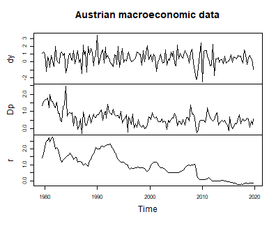
plot of chunk data
Model set-up
Argument tvp = TRUE makes the coefficients time varying
and error = "sv+covar" makes the error covariance matrix
time varying. The posterior sampler follows from the two, which can be
checked on the resulting object.
model <- create_bvarmodel(data, p = 2, deterministic = "const",
tvp = TRUE, error = "sv+covar", varsel = "bvs",
iterations = 3000, burnin = 1000)
model[["model"]][["algorithm"]]
#> [1] "VarTvpStochvol"error = "sv" would estimate the volatilities without the
covariances, which sets the off-diagonal elements of
to zero. "sv+covar" is the specification that corresponds
to the model above.
Priors
The prior of a TVP-SV model is a prior on two state equations beside the usual prior on the level of the coefficients.
model <- add_priors(model,
coef = list(v_i = 1, v_i_det = 1 / 10,
shape = 3, rate = 0.0001, rate_det = 0.01),
sigma = list(shape = 3, rate = 0.01,
mu = 0, v_i = 0.01,
state_variance = 0.05, offset = 1e-8),
varsel = list(inprior = 0.5, exclude_det = TRUE))In argument coef, v_i and
v_i_det are the prior precisions of the initial state of
the coefficients, as they are the prior precisions of the coefficients
themselves in a constant parameter model. shape and
rate are the parameters of the inverse gamma prior of the
elements of
,
the variances of the state equation of the coefficients. A small
rate relative to the scale of the data pulls those
variances towards zero and the coefficient paths towards straight lines:
the prior is that a coefficient is constant, and the data have to argue
it out of that. rate_det does the same for coefficients of
deterministic terms, with a larger value, since an intercept that is
allowed to drift is often what carries a change in the mean of a
series.
Since the scale of the data is what makes a rate small
or large, it is worth checking rather than copying. A TVP model has one
coefficient per regressor and period, so a model with many regressors
and a short sample can have more coefficients than observations, and a
rate loose enough for the path to exploit that produces a
model which fits every observation exactly, has no residuals left, and
reports a flat volatility. The diagnostic is to compare the residuals
under the posterior mean of the coefficient path with the residuals of a
least squares fit of the same regressors: the first should be somewhat
smaller than the second, not very much smaller.
residual_sd <- function(object) {
k <- object[["model"]][["k"]]
m <- ncol(object[["data"]][["train"]][["z"]])
tt <- nrow(object[["data"]][["train"]][["y"]])
y <- matrix(t(object[["data"]][["train"]][["y"]]))
z <- object[["data"]][["train"]][["z"]]
a <- colMeans(object[["posterior"]][["a"]][["coeffs"]])
fitted <- rep(NA_real_, tt * k)
for (period in 1:tt) {
rows <- (period - 1) * k + 1:k
fitted[rows] <- z[rows, ] %*% a[(period - 1) * m + 1:m]
}
ols <- solve(crossprod(z)) %*% crossprod(z, y)
result <- rbind(apply(matrix(y - fitted, k), 1, stats::sd),
apply(matrix(y - z %*% ols, k), 1, stats::sd))
dimnames(result) <- list(c("tvp", "ls"), object[["model"]][["endogen"]])
result
}The function is used further below, once the model has been estimated.
In argument sigma, shape and
rate now refer to the state equation of the
log-volatilities rather than to an error variance: they are the prior of
and control how quickly a volatility is allowed to move. mu
and v_i are the prior mean and precision of the initial
log-volatility, and state_variance is the value
is initialised at. offset is added to the squared errors
before their logarithm is taken, which keeps a residual that happens to
be near zero from producing an infinite log-volatility.
sigma$rate deserves a second look, because it decides
how much of a stochastic volatility model one actually gets. With
shape = 3 the prior mean of
is rate / 2, and since the log-volatility is a random walk,
its standard deviation over a sample of
periods is about
.
At rate = 0.0001 that is about a tenth of a log point over
this sample, so the prior allows the volatilities to move by a few
percent and the specification is a constant variance model in all but
name. At rate = 0.01, used here, it allows them to move by
a factor of about two. An equation whose data demand more than the prior
allows will move anyway, so the effect of a tight prior is selective
rather than uniform, which is exactly what makes it easy to miss.
Argument varsel specifies Bayesian variable selection
after Korobilis (2013). One inclusion parameter is drawn per
coefficient, not per coefficient and period, so a regressor is either in
the model over the whole sample or out of it over the whole sample.
exclude_det = TRUE keeps the deterministic terms out of the
selection.
A note on that last combination: in a model with
constant coefficients and an error covariance block,
one selection scheme applies to the coefficients and the covariances
together, and add_priors refuses to restrict the selection
to the coefficients alone. A time varying model can treat the two blocks
separately, which is why exclude_det = TRUE is accepted
here without also specifying varsel$covar.
Initial values and posterior draws
Initial values of the state variances and volatilities are drawn from their priors, so the seed is set before them.
set.seed(1234567)
model <- add_initial_values(model)
model <- add_posterior_coefficients(model)The diagnostic of the previous section says that this specification has not absorbed its own residuals:
round(residual_sd(model), 4)
#> dy Dp r
#> tvp 0.8881 0.2748 0.0747
#> ls 0.9023 0.3244 0.1051Evaluation
Summary statistics for a period
A TVP model has one set of coefficients per period, so a summary
table has to be the summary of a period. summary uses the
last one by default and reports which period that is.
summary(model)
#>
#> Bayesian TVP-SV-VAR model with p = 2
#>
#> Variable selection algorithm: Bayesian variable selection (Korobilis, 2013)
#>
#> Endogenous variables: dy, Dp, r
#>
#> Period: 160
#>
#> Variable: dy
#>
#> Mean SD Naive SD Time-series SD 2.5% 50%
#> dy.l1 -0.066278404 0.10543372 0.001924948 0.006785691 -0.32469726 0.0000000
#> Dp.l1 -0.005977266 0.08944726 0.001633076 0.002224728 -0.25279685 0.0000000
#> r.l1 -0.051784083 0.18922085 0.003454684 0.008432818 -0.56363610 0.0000000
#> dy.l2 -0.023076800 0.06587403 0.001202690 0.004547725 -0.23416518 0.0000000
#> Dp.l2 -0.284714770 0.26676419 0.004870425 0.016079125 -0.80650889 -0.2856259
#> r.l2 -0.016329471 0.15542119 0.002837590 0.004032854 -0.41221147 0.0000000
#> const 0.491188985 0.23956574 0.004373852 0.009299597 0.04062227 0.4868848
#> 97.5% Incl. prob.
#> dy.l1 0.0000000 0.3833333
#> Dp.l1 0.1712059 0.1576667
#> r.l1 0.2340701 0.2890000
#> dy.l2 0.0000000 0.1956667
#> Dp.l2 0.0000000 0.6583333
#> r.l2 0.2561653 0.1970000
#> const 0.9721745 1.0000000 *
#>
#> Variable: Dp
#>
#> Mean SD Naive SD Time-series SD 2.5%
#> dy.l1 0.000572088 0.009786042 0.0001786679 0.0002475684 0.000000000
#> Dp.l1 0.017387045 0.057636716 0.0010522976 0.0042882659 -0.009630369
#> r.l1 0.345245448 0.324604787 0.0059264455 0.0629094252 0.000000000
#> dy.l2 0.044044019 0.053643974 0.0009794005 0.0059624440 0.000000000
#> Dp.l2 0.006126257 0.041307396 0.0007541664 0.0037936243 -0.020843803
#> r.l2 -0.166471910 0.282803246 0.0051632572 0.0578256082 -0.826379738
#> const 0.431043694 0.129792291 0.0023696722 0.0053075734 0.177883404
#> 50% 97.5% Incl. prob.
#> dy.l1 0.00000000 0.0000000 0.03233333
#> Dp.l1 0.00000000 0.2082870 0.17200000
#> r.l1 0.28728505 1.0514661 0.72866667
#> dy.l2 0.01785875 0.1632261 0.54900000
#> Dp.l2 0.00000000 0.1435913 0.10466667
#> r.l2 0.00000000 0.1956778 0.46066667
#> const 0.42741058 0.6899140 1.00000000 *
#>
#> Variable: r
#>
#> Mean SD Naive SD Time-series SD 2.5%
#> dy.l1 0.00000000 0.00000000 0.0000000000 0.000000000 0.00000000
#> Dp.l1 0.05256902 0.03899228 0.0007118984 0.001206718 -0.02470565
#> r.l1 0.77195243 0.12737333 0.0023255082 0.011613303 0.51865402
#> dy.l2 0.00000000 0.00000000 0.0000000000 0.000000000 0.00000000
#> Dp.l2 0.04291158 0.03493623 0.0006378454 0.002471452 -0.01935006
#> r.l2 -0.10178528 0.10310161 0.0018823692 0.005133737 -0.30645314
#> const -0.07762700 0.04131462 0.0007542983 0.002419553 -0.16080597
#> 50% 97.5% Incl. prob.
#> dy.l1 0.00000000 0.000000000 0.000
#> Dp.l1 0.05295703 0.127950732 1.000
#> r.l1 0.77240998 1.025869411 1.000 *
#> dy.l2 0.00000000 0.000000000 0.000
#> Dp.l2 0.04313115 0.113755991 0.928
#> r.l2 -0.10024917 0.087541637 1.000
#> const -0.07694170 0.002257948 1.000
#>
#> Variance-covariance matrix:
#>
#> Mean SD Naive SD Time-series SD 2.5%
#> dy_dy 0.5420527903 0.2290323501 4.181539e-03 1.003417e-02 0.2332098605
#> dy_Dp 0.0174596777 0.0302506452 5.522987e-04 7.103392e-04 -0.0385694030
#> dy_r 0.0057918968 0.0114177539 2.084587e-04 6.566443e-04 -0.0150565318
#> Dp_Dp 0.0545206069 0.0212078658 3.872009e-04 9.642713e-04 0.0225231194
#> Dp_r 0.0015862627 0.0023269999 4.248501e-05 1.115763e-04 -0.0028311773
#> r_r 0.0008015261 0.0006918971 1.263226e-05 4.468077e-05 0.0001029526
#> 50% 97.5%
#> dy_dy 0.5020423794 1.082966733 *
#> dy_Dp 0.0155226190 0.084774326
#> dy_r 0.0050130465 0.029872618
#> Dp_Dp 0.0516680441 0.104631581 *
#> Dp_r 0.0014349976 0.006769560
#> r_r 0.0006098417 0.002549734 *Argument period asks for another one. It is an index
into the estimation sample, which the following helper turns into a
date.
period_of <- function(object, year, quarter) {
which(stats::time(object[["data"]][["train"]][["y"]]) == year + (quarter - 1) / 4)
}
summary(model, period = period_of(model, 1985, 1))
#>
#> Bayesian TVP-SV-VAR model with p = 2
#>
#> Variable selection algorithm: Bayesian variable selection (Korobilis, 2013)
#>
#> Endogenous variables: dy, Dp, r
#>
#> Period: 21
#>
#> Variable: dy
#>
#> Mean SD Naive SD Time-series SD 2.5% 50%
#> dy.l1 -0.068695602 0.10573070 0.001930370 0.006467777 -0.3266650 0.0000000
#> Dp.l1 -0.009446311 0.09243737 0.001687668 0.002460285 -0.2900326 0.0000000
#> r.l1 -0.050448612 0.18543002 0.003385473 0.008158181 -0.5386133 0.0000000
#> dy.l2 -0.023821855 0.06342962 0.001158061 0.004654613 -0.2194952 0.0000000
#> Dp.l2 -0.281093966 0.26116216 0.004768147 0.016061142 -0.7909823 -0.2858206
#> r.l2 -0.011891875 0.14916333 0.002723337 0.003670105 -0.3758398 0.0000000
#> const 0.921194662 0.33862102 0.006182346 0.013698919 0.2997806 0.9091801
#> 97.5% Incl. prob.
#> dy.l1 0.0000000 0.3833333
#> Dp.l1 0.1662935 0.1576667
#> r.l1 0.2121068 0.2890000
#> dy.l2 0.0000000 0.1956667
#> Dp.l2 0.0000000 0.6583333
#> r.l2 0.2638965 0.1970000
#> const 1.6354139 1.0000000 *
#>
#> Variable: Dp
#>
#> Mean SD Naive SD Time-series SD 2.5%
#> dy.l1 0.0001878057 0.007928131 0.0001447472 0.000132482 0.000000000
#> Dp.l1 0.0159589242 0.057087856 0.0010422769 0.003928567 -0.026561342
#> r.l1 0.3556307265 0.322868274 0.0058947412 0.063346576 0.000000000
#> dy.l2 0.0381753667 0.047155038 0.0008609293 0.005557033 -0.007490964
#> Dp.l2 0.0089848194 0.044549431 0.0008133576 0.004552932 0.000000000
#> r.l2 -0.1532950332 0.269984972 0.0049292287 0.043503646 -0.790843198
#> const 0.4760220617 0.255288473 0.0046609085 0.034883470 0.006004530
#> 50% 97.5% Incl. prob.
#> dy.l1 0.00000000 0.0000000 0.03233333
#> Dp.l1 0.00000000 0.2060210 0.17200000
#> r.l1 0.30232452 1.0501716 0.72866667
#> dy.l2 0.01209162 0.1397298 0.54900000
#> Dp.l2 0.00000000 0.1650631 0.10466667
#> r.l2 0.00000000 0.2249946 0.46066667
#> const 0.46029444 0.9616087 1.00000000 *
#>
#> Variable: r
#>
#> Mean SD Naive SD Time-series SD 2.5%
#> dy.l1 0.00000000 0.00000000 0.0000000000 0.000000000 0.00000000
#> Dp.l1 0.12069273 0.04218125 0.0007701208 0.001223106 0.03870664
#> r.l1 0.78330547 0.11473234 0.0020947163 0.010718860 0.55811194
#> dy.l2 0.00000000 0.00000000 0.0000000000 0.000000000 0.00000000
#> Dp.l2 0.05836381 0.04167194 0.0007608220 0.003273699 -0.01455864
#> r.l2 -0.07716175 0.09295251 0.0016970729 0.005471205 -0.26616539
#> const 0.26475198 0.11954980 0.0021826707 0.003677003 0.03470074
#> 50% 97.5% Incl. prob.
#> dy.l1 0.00000000 0.00000000 0.000
#> Dp.l1 0.12066010 0.20408693 1.000 *
#> r.l1 0.78189157 1.01653650 1.000 *
#> dy.l2 0.00000000 0.00000000 0.000
#> Dp.l2 0.05984480 0.13952252 0.928
#> r.l2 -0.07463789 0.09820926 1.000
#> const 0.26371324 0.50282960 1.000 *
#>
#> Variance-covariance matrix:
#>
#> Mean SD Naive SD Time-series SD 2.5%
#> dy_dy 0.887407820 0.26252818 0.0047930869 0.0139034881 0.464265867
#> dy_Dp -0.005859495 0.04199370 0.0007666965 0.0012768959 -0.093337177
#> dy_r -0.009980501 0.02095241 0.0003825369 0.0005185643 -0.054887753
#> Dp_Dp 0.164664384 0.04720095 0.0008617674 0.0039761706 0.094686130
#> Dp_r 0.014768503 0.00837251 0.0001528604 0.0004399072 0.001548049
#> r_r 0.021202352 0.01023551 0.0001868739 0.0004569547 0.008731618
#> 50% 97.5%
#> dy_dy 0.856162875 1.47780507 *
#> dy_Dp -0.005190252 0.07510160
#> dy_r -0.009022994 0.02917248
#> Dp_Dp 0.157048148 0.28143497 *
#> Dp_r 0.013800609 0.03302889 *
#> r_r 0.019081416 0.04720650 *Comparing the two tables compares two models: the same specification, fitted to the same sample, describing two different points in it.
The inclusion probabilities are the exception. They do not carry a period, because variable selection decides on a regressor for the whole sample, and the column is therefore identical in both tables.
Coefficient paths
plot draws one figure per block of coefficients – the
lags of the endogenous variables, the deterministic terms, and the
covariance matrix of the error term – with one panel per coefficient
showing the median and the bounds of a credible band over time. A block
with more regressors than max_cols is split over several
figures, which is what keeps the panels of a model with many regressors
large enough to read.
plot(model)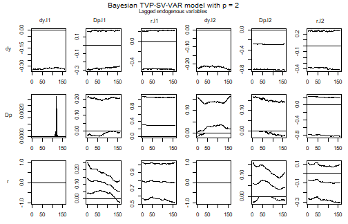
plot of chunk paths
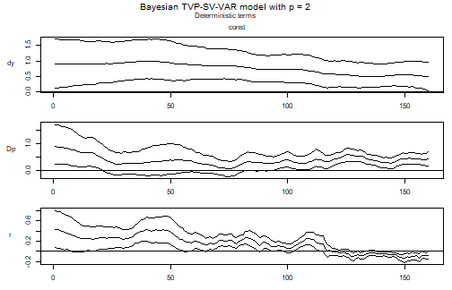
plot of chunk paths
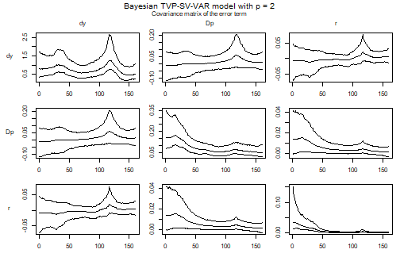
plot of chunk paths
A panel that sits on a flat line at zero is a coefficient that variable selection has switched off. The remaining panels are the reason for estimating the model: a coefficient that drifts across the sample is one that a constant parameter VAR would have averaged.
A single path is easier to read on its own. The draws of the
coefficients sit in posterior$a$coeffs, with the
coefficients of one period next to each other and the periods stacked
from left to right, so the path of one coefficient is every
-th
column.
coefficient_path <- function(object, equation, regressor, ci = 0.9) {
k <- object[["model"]][["k"]]
m <- ncol(object[["data"]][["train"]][["z"]])
tt <- nrow(object[["data"]][["train"]][["y"]])
# Coefficients are stored as vec(A), so the position of a regressor in an
# equation is the number of preceding regressors times the number of
# equations, plus the position of the equation.
i <- (which(dimnames(object[["data"]][["train"]][["x"]])[[2]] == regressor) - 1) * k +
which(object[["model"]][["endogen"]] == equation)
draws <- object[["posterior"]][["a"]][["coeffs"]][, m * 0:(tt - 1) + i]
bands <- t(apply(draws, 2, stats::quantile,
probs = c((1 - ci) / 2, .5, 1 - (1 - ci) / 2)))
stats::ts(bands, start = stats::start(object[["data"]][["train"]][["y"]]),
frequency = stats::frequency(object[["data"]][["train"]][["y"]]))
}
path <- coefficient_path(model, equation = "r", regressor = "r.01")
stats::ts.plot(path, lty = c(2, 1, 2),
main = "Short-term rate ~ its own first lag",
ylab = "Coefficient")
abline(h = 0, lty = "dotted")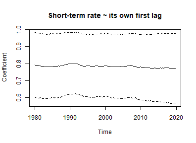
plot of chunk one-path
This path is practically flat. With coef$rate = 0.0001
the prior is that the coefficients are constant, and for this
coefficient the data do not argue otherwise.
Volatility paths
The draws of the error covariance matrix are stored as precisions, one matrix per period, so the standard deviations are the square roots of the diagonal of its inverse.
volatility <- function(object) {
k <- object[["model"]][["k"]]
kk <- k * k
tt <- nrow(object[["data"]][["train"]][["y"]])
draws <- object[["posterior"]][["u_sigma_inv"]][["coeffs"]]
result <- matrix(NA_real_, tt, k)
for (i in 1:tt) {
result[i, ] <- rowMeans(apply(draws[, (i - 1) * kk + 1:kk], 1,
function(x) {sqrt(diag(solve(matrix(x, k))))}))
}
stats::ts(result, start = stats::start(object[["data"]][["train"]][["y"]]),
frequency = stats::frequency(object[["data"]][["train"]][["y"]]),
names = object[["model"]][["endogen"]])
}
plot(volatility(model),
main = "Posterior mean of the residual standard deviations")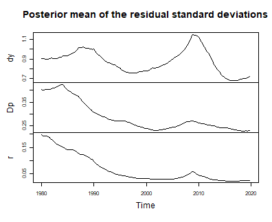
plot of chunk volatility
This is the part of the model that is hardest to do without. The volatilities of the inflation and interest rate residuals are highest at the start of the sample and fall to about a half and a tenth of that level, respectively, the latter almost vanishing once the short-term rate approached its lower bound. The volatility of output growth has no such trend: it is highest during the financial crisis in 2009 and lowest in the years after it. A constant covariance matrix would spread each of these episodes over the whole sample.
Impulse responses for a period
irf and fevd take a period in
the same way summary does, which is what makes an impulse
response of a TVP model a well defined object: it is the response
implied by the coefficients and the covariance matrix of one period.
early <- irf(model, impulse = "r", response = "Dp", n_ahead = 20,
period = period_of(model, 1985, 1))
late <- irf(model, impulse = "r", response = "Dp", n_ahead = 20,
period = period_of(model, 2010, 1))
plot(early, main = "Response of inflation to the short-term rate, 1985Q1")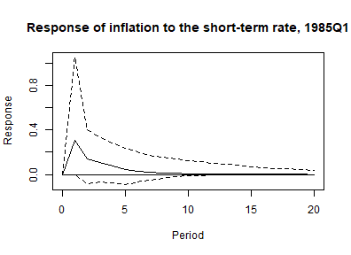
plot of chunk irf
plot(late, main = "Response of inflation to the short-term rate, 2010Q1")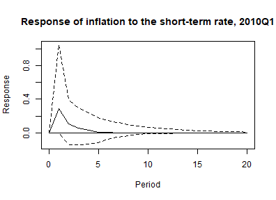
plot of chunk irf
In both periods inflation rises after an unexpected increase of the
short-term rate, and the response dies out slightly faster in 2010. By
default irf computes forecast error impulse responses,
whose shock is one unit of the forecast error of the impulse variable,
so the two responses differ only because the coefficients of the two
periods differ. How large a typical shock was in each period is what the
volatility figure above shows, and with type = "oir" it
would enter the responses as well. A forecast error impulse response is
not identified, so its positive sign is no statement about the effect of
a monetary tightening. The vignette on sign restrictions takes up that
question.
Forecasts
Forecasts start from the state of the last period of
the estimation sample, and add_posterior_forecasts
simulates each draw forward from there: the coefficients, the covariance
block and the log-volatilities take a step of their random walks every
quarter, so the forecast is a draw from the posterior predictive
distribution of the estimated model. The bands reflect both the
uncertainty about
and
and the drift the model allows after the end of the sample.
model <- add_forecast_input(model, n_ahead = 8)
model <- add_posterior_forecasts(model)
plot(predict(model, n_ahead = 8))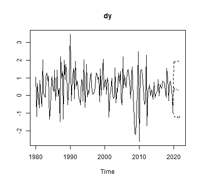
plot of chunk forecast
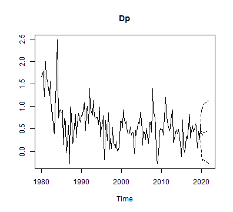
plot of chunk forecast
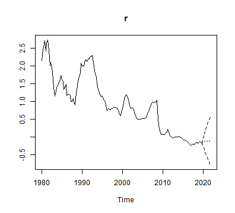
plot of chunk forecast
forecast_states = "hold" carries the draws of
and
forward over the whole horizon instead, which is the forecast
conditional on no further drift. The width of the 90% intervals eight
quarters ahead shows what the drift adds:
held <- add_posterior_forecasts(model, forecast_states = "hold")
interval_width <- function(object) {
fcst <- predict(object, n_ahead = 8)[["fcst"]]
apply(fcst[8, , ], 1, function(x) diff(stats::quantile(x, c(0.05, 0.95))))
}
round(rbind(simulated = interval_width(model), held = interval_width(held)), 2)
#> dy Dp r
#> simulated 2.56 1.12 1.09
#> held 2.51 0.90 0.43Eight quarters ahead, carrying the drift forward leaves the interval of output growth almost unchanged, widens that of inflation by about a quarter and makes that of the short-term rate two and a half times as wide. A forecast that holds the coefficients at the end of the sample understates the uncertainty this model implies.
Other combinations
tvp and error are independent, so the four
models below are all available, and the middle two are useful
comparisons rather than compromises:
-
tvp = FALSE, error = "wishart"– the standard VAR of the introductory vignette. -
tvp = FALSE, error = "sv+covar"– constant coefficients, moving volatilities. The usual finding for macroeconomic data is that this specification accounts for most of what a full TVP-SV model does, which makes it the model to beat. -
tvp = TRUE, error = "wishart"– moving coefficients, constant volatilities. Worth estimating mainly to see how much of the drift in the coefficients survives once the volatilities are allowed to move as well. -
tvp = TRUE, error = "sv+covar"– the model of this vignette.
Since these are ordinary bvarmodel objects, they can be
compared with the tools of the model comparison vignette. Only the
estimation cost differs noticeably: the coefficient draws of a TVP model
are a path per draw rather than a vector, so both the sampler and the
object it returns grow with the length of the sample.
The same two switches apply to vector error correction models, which are the subject of the companion vignette on TVP-SV-VEC models.
Citing bvartools
If you use bvartools in published work, please cite it.
citation("bvartools") prints the reference, and the package
has the DOI 10.5281/zenodo.22736604,
which always resolves to the latest archived version.
References
Chan, J., Koop, G., Poirier, D. J., & Tobias, J. L. (2019). Bayesian econometric methods (2nd ed.). Cambridge: Cambridge University Press.
Cogley, T., & Sargent, T. J. (2005). Drifts and volatilities: Monetary policies and outcomes in the post WWII US. Review of Economic Dynamics, 8(2), 262-302. https://doi.org/10.1016/j.red.2004.10.009
Durbin, J., & Koopman, S. J. (2002). A simple and efficient simulation smoother for state space time series analysis. Biometrika, 89(3), 603-616. https://doi.org/10.1093/biomet/89.3.603
Kim, S., Shephard, N., & Chib, S. (1998). Stochastic volatility: Likelihood inference and comparison with ARCH models. Review of Economic Studies, 65(3), 361-393. https://doi.org/10.1111/1467-937X.00050
Koop, G., & Korobilis, D. (2010). Bayesian multivariate time series methods for empirical macroeconomics. Foundations and Trends in Econometrics, 3(4), 267-358. https://dx.doi.org/10.1561/0800000013
Korobilis, D. (2013). VAR forecasting using Bayesian variable selection. Journal of Applied Econometrics, 28(2), 204-230. https://doi.org/10.1002/jae.1271
Primiceri, G. E. (2005). Time varying structural vector autoregressions and monetary policy. Review of Economic Studies, 72(3), 821-852. https://doi.org/10.1111/j.1467-937X.2005.00353.x